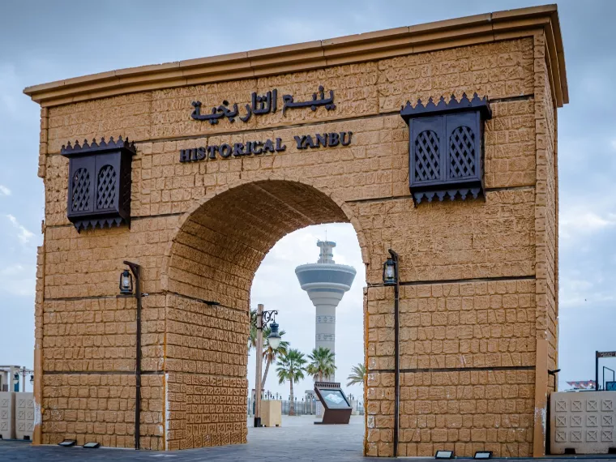

Yanbu Historic Area
The Yanbu Historic Area reflects the city’s older cultural identity and preserves elements of traditional architecture. It represents an important connection to the past and highlights how coastal communities developed over time.
Visitors often explore the area to experience a more traditional atmosphere, learn about local heritage, and appreciate the contrast between historic spaces and modern urban development.
